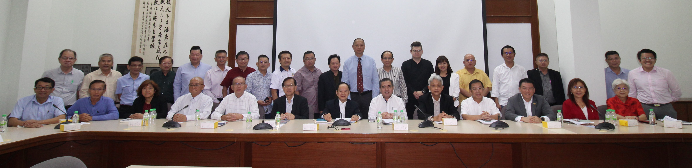

民主行动党秘书长陆兆福率团莅访交流简报
董教总代表与民主行动党代表合影。前排左起：吴小铭、李添霖、方良妹、杨应俊、李金桦、陈友信、陈大锦、陆兆福、谢立意、陈国伟、倪可敏、郭素沁、章瑛；后排左起：萧汉昌、涂兴全、罗志昌、陈清顺、杨安山、王金忠、何广福、徐来兴、吴令富、潘光耀、陈贵源、庄俊隆、杨才国、俞利文、张念群、吴思亿、陈泓宾、王仕发、黄再兴、李政贤。民主行动党秘书长陆兆福于2022年6月24日率团访问董教总，受到以董总主席陈大锦、教总主席谢立意为首董教总领导人的热烈欢迎，双方就华教课题广泛交换意见。
董总主席陈大锦致欢迎词时，肯定希盟政府任内公平对待多源流教育，制度化拨款华文独中、国民型中学和华社三所民办大学学院。同时，期许希盟执政的州属，能够延续过往的政策，以实际行动继续支持华校发展，公平对待多源流教育。对于马来右翼近年频频鼓动单元主义思维，试图挑战多源流教育根基，他重申董总将坚定捍卫母语教育权利，积极监督政府施政，确保华教健全发展。
他指出，国家教育是长期的工程，不该朝令夕改，可是此刻，政治过度介入教育，以致国民教育素质落后于国际水平。教育是国之大计，理应由教育专业主导，让教育回归教育，国家教育才能回归正轨。
教总主席谢立意致欢迎词时表示，教总的成立，是因华教而诞生，而且宗旨非常明确，就是把华文教育从死亡边缘中挽救回来，反对不利华教的政策，坚决捍卫华教，是教总与生俱来的使命。
民主行动党秘书长陆兆福表示，此次交流乃是要了解华教所面对的问题，从而拟定更好的多元政策，以打造更好的多元社会。该党是以多元为创党之原则，即打造多元族群国家，推动多元政策。虽然希盟政府执政中央仅有22个月，但依旧以多元为原则，只要能力所及，必定会向华教伸出援手。
陆兆福表示非常了解华社对华教的期望与态度，也很了解华文教育在这些年来，所面对的风风雨雨和挑战，所以会持续与董教总保持一致立场，以捍卫我国母语教育的权益。
与此同时，董教总代表亦借此机会针对教育拨款、承认统考、马来文课本爪夷字单元课题、国中历史教科书、国民型中学发展困境等当前华教课题，拟出具体看法与要求，呈予行动党代表团。
其他出席者尚包括董总署理主席陈友信、副主席杨应俊、李添霖、吴小铭、秘书长庄俊隆、副秘书长杨才国、财政杨安山、中委常务委员涂兴全、中央委员萧汉昌、吴令富、黄再兴、潘光耀、罗志昌、陈贵源、李兆祥、徐来兴、吴思亿、何广福、执行长梁胜义、副执行长（总务处）兼资料档案局局主任锺伟前、副执行长（学务处）兼教师教育局局主任曾庆方、人力资源局局主任林纪松和会务与组织局局主任江伟俊；教总副主席李金桦、方良妹、秘书长王仕发、财政王金忠、常务理事陈清顺、执行长叶翰杰和执行主任余裕忠；民主行动党顾问陈国伟、全国副主席倪可敏与郭素沁、全国宣传秘书张念群、妇女组主席章瑛、社青团总团长俞利文、全国中委陈泓宾和李政贤等。